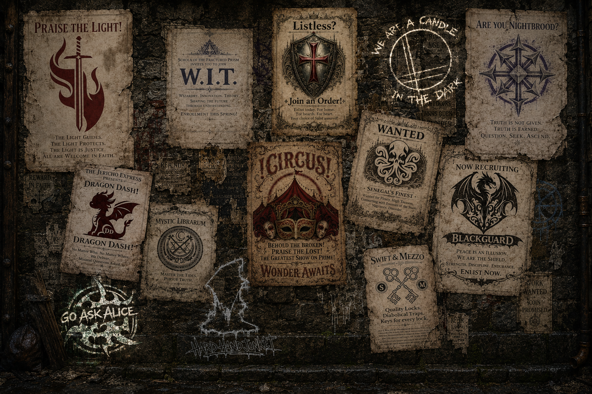

Church of Luminous
The Light guides. The Light protects. The Light is justice.
All are welcome in faith.
Institutions promise order. Guilds promise opportunity. Armies promise safety. The alleys promise something else.

The Light guides. The Light protects. The Light is justice.
All are welcome in faith.
Wizardry. Innovation. Theory.
Enrollment remains open to the curious, the brilliant, and the catastrophically overconfident.
For home. For hearth. For heart.
Choose a Saint. Take an oath. Stand where others cannot.
You did not see this mark.
We are a candle in the dark.
Truth is not given. Truth is earned.
Question. Seek. Ascend.
No matter what. No matter where. We deliver.
Minimal questions asked.
Master the tides. Pursue truth.
Books remember what mages forget.
Behold the broken. Praise the lost.
Wonder awaits beneath the red canvas.
Wanted for piracy, high treason, and an unreasonable number of tavern incidents.
Good company. Better contracts.
Peace is an illusion. We are the shield.
Strength. Discipline. Endurance.
Quality locks. Diabolical traps. Keys for every lock.
Misuse remains entirely the customer’s responsibility.
Bring a curiosity, a memory, or a secret.
Go ask Alice.
Broken bones heal. Cowards do not.
The next match begins when someone stops asking permission.